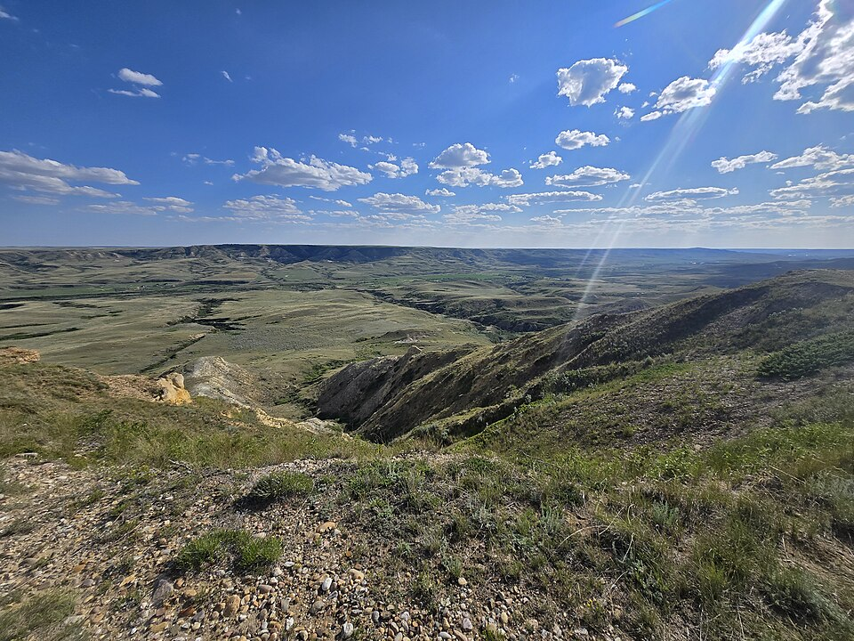

Reserve a campsite
Sites open six months ahead. Most have a fire ring and a picnic table.
Four things to sort out before you arrive. Most can be done from home in about ten minutes.

Sites open six months ahead. Most have a fire ring and a picnic table.
Download the free map or pick up a paper copy at the visitor center.
A day pass covers one vehicle and everyone in it for seven days.
Signs mark every junction. Check the board for closures before you start.